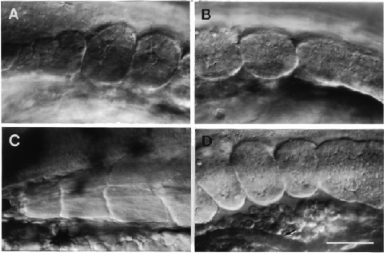

Modified from:
Kimmel et al., 1955.
Developmental Dynamics 203:253-310. Copyright © 1995 Wiley-Liss, Inc.
Reprinted only by permission of Wiley-Liss, a subsidiary of John Wiley &
Sons, Inc.
Fig. 17. Somite morphogenesis. Left side Nomarski views, dorsal to the top, anterior to the left. A: The anterior-most somites (somites 1-3), at the 9-somite stage (13.5 h). B: The posterior-most somites, somites 8 and 9, at the same stage. The tenth somite is just beginning to form and appears as a circumscribed region, that might be called a "somitomere" (Martindale et al., 1987), within the paraxial mesodermal segmental plate. Pinching off of the posterior border of this nascent tenth somite is not yet evident; we do not count the somite for staging purposes until pinching off seems complete. C: Myotomes 1-3 have developed from the first three somites (compare with A) and hence we give them corresponding numbers. Prim-15 stage (30 h). Transverse and horizontal myosepta are prominent, and differentiated muscle fibers run obliquely through the entire length of a myotome; their cross-striations are evident. More posterior myotomes are much more prominently V-shaped (e.g. as in Fig. 34B). D. The last three somites at the 19-somite stage, compare with B. Somite 20 begins to pinch off; notice that the segmental plate is more epithelial-looking than earlier. The most anterior somite visible here, somite 17, is already taking on a chevron shape. The somites lie just dorsal to developing red blood cells in the blood island, which in turn is just above the rudiment of the pronephric duct at the arrow (and which does not have a lumen at this stage). The duct will open to the exterior just beneath the position that somite 19 now occupies. However, as the somites develop into myotomes they elongate considerably along the AP axis: This brings myotome 17 into the position above the end of the pronephric duct (and later the anus), by the prim-5 stage (24 h), and it brings myotome 15 to the same location by the end of embryogenesis. Scale bar: 50 µm.

Figure 17